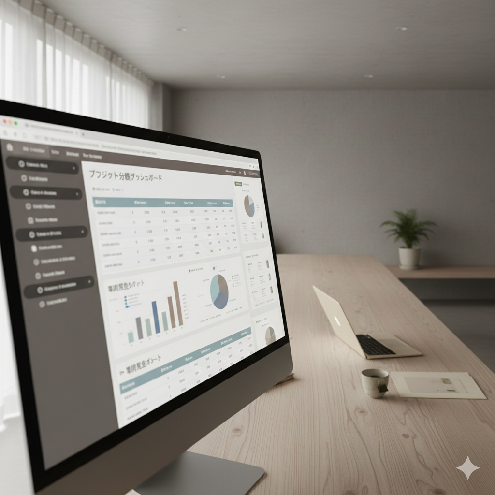

煩雑な業務から解放し、
思考に集中できる環境を
マーケティングは本来、「何を、誰に、どう届けるか」を考える仕事のはず。
調査・集計・報告の負担を軽減し、本来の意思決定に集中できる環境を実現します。
リサーチ業務の負担を軽減する
煩雑な調査・集計・レポート作成から解放し、考える時間を生み出します。
InsightSprint
マーケティングリサーチの煩雑な業務を効率化するサービス。
調査設計から分析・示唆抽出まで、従来の数分の1の時間で完了。
データ収集や集計に追われる日々から解放し、本来考えるべきことに集中できる時間を生み出します。

InsightSprint 分析画面イメージ
さらに解放を進める領域
マーケティング業務全体を見渡し、煩雑さから解放できる領域を広げていきます。
上流工程の効率化
目的の定義から調査設計まで、煩雑な上流工程も効率化。考える時間をさらに生み出します。
定性調査の負担軽減
インタビュー分析や洞察抽出など、属人化しやすい領域も再現性のある形に再設計します。
マーケティングを、
意思決定の仕事に取り戻す。